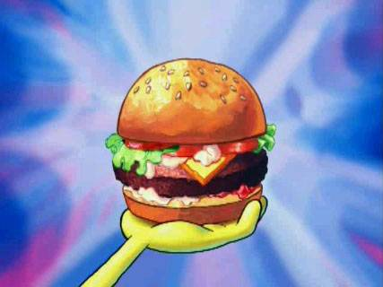

Krabby Patties

Plankton’s Secret Krabby Patty Recipe: How to Steal the Show!
Ah, greetings, minions and culinary conspirators! It’s Plankton here, your one and only guide to the ultimate recipe for the Krabby Patty—the crown jewel of my nefarious plans! While I may not have quite cracked the formula, I’ve concocted a devious imitation that’s sure to fool even the most discerning palate. Follow my lead, and you’ll be on your way to making a burger so irresistible, it’ll have you feeling like you’ve just taken over the Krusty Krab itself!
Ingredients
For the Patties:
- Ground Beef: 1 pound (The secret to success is a juicy, flavorful patty!)
- Ground Pork: 1/2 pound (A touch of pork makes it succulent. Muhahaha!)
- Bread Crumbs: 1/2 cup (For a texture so perfect, it’s practically criminal.)
- Egg: 1 large (Binding agents are crucial, my friends.)
- Onion: 1 small, finely chopped (Mwahaha! The more they taste, the more they’ll love it!)
- Garlic: 2 cloves, minced (A hint of garlic is just the thing to lure them in.)
- Worcestershire Sauce: 2 tablespoons (The elusive, umami secret.)
- Soy Sauce: 1 tablespoon (To add a touch of sophistication. They’ll never suspect a thing!)
- Ketchup: 1 tablespoon (For that classic burger taste that even Squidward can’t resist.)
- Salt & Pepper: To taste (Essential for making them utterly irresistible.)
- Dried Oregano: 1 teaspoon (A little bit of herbiness never hurt anyone.)
- Dried Thyme: 1/2 teaspoon (Adds a sophisticated note, perfect for world domination.)
For Assembly:
- Burger Buns: 4, toasted (You need a worthy vessel for this grand creation.)
- Lettuce: Fresh leaves (A bit of crunch to distract from my sinister scheme.)
- Tomato: 1 large, sliced (For freshness and a hint of color.)
- Pickles: Sliced (Essential for that extra zing! Even evil geniuses need a crunch.)
- Cheese Slices: 4 (Optional, but highly recommended. Even a villain needs some indulgence!)
- Mayonnaise: 1/4 cup (To spread a little extra deception.)
- Ketchup: 1/4 cup (And just a tad more for that unbeatable taste.)
- Mustard: 2 tablespoons (To complete the illusion of perfection.)
Steps
- Prepare the Patty Mixture: In a grand mixing bowl, combine the ground beef and ground pork. Add the bread crumbs, egg, finely chopped onion, minced garlic, Worcestershire sauce, soy sauce, ketchup, salt, pepper, oregano, and thyme. Mix gently—overmixing could ruin everything, and we can’t have that, can we?
- Form the Patties: Divide the mixture into 4 equal portions. Shape each into a patty about 1/2 inch thick. Don’t forget the tiny indent in the center—it’s the key to keeping the patty perfectly flat and devilishly delicious!
- Cook the Patties: Heat a grill or skillet over medium-high heat. Cook the patties for about 4-5 minutes on each side, or until they reach the desired level of doneness. Add a slice of cheese during the last minute of cooking if you’re feeling particularly decadent.
- Toast the Buns: Butter the insides of the burger buns and toast them until golden brown. This step is crucial for that delightful crunch!
- Prepare the Sauce: In a small bowl, mix together mayonnaise, ketchup, and mustard. This triumvirate of flavor will distract from any hint of my true intentions.
- Assemble the Krabby Patties: Spread a generous layer of the sauce on the bottom half of each toasted bun. Layer on a fresh leaf of lettuce, a slice of tomato, and pickles. Place the cooked patty on top and finish with the top bun.
- Serve and Savor: Serve these Krabby Patties to your unsuspecting guests or use them to gain favor with your minions. Either way, you’ll be savoring the taste of victory—well, until I’m able to get my hands on the real secret formula!